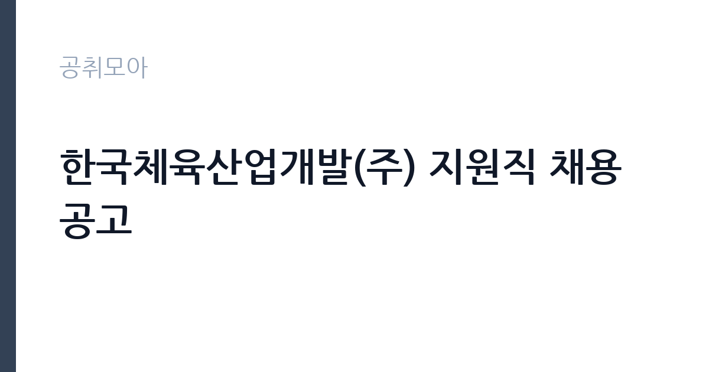

[공공기관] 한국체육산업개발(주) 지원직 채용공고
한국체육산업개발(주) · 서울 · 마감 2026-11-16 (D-14) · 출처 잡알리오

한눈에 보는 모집 조건
| 기관 | 한국체육산업개발(주) |
|---|---|
| 공고명 | 한국체육산업개발(주) 지원직 채용공고 |
| 고용형태 | 정규직 |
| 근무지 | 서울 |
| 게시일 | 2026-11-02 |
| 마감일 | 2026-11-16 (D-14) |
지원자격, 이렇게 읽으세요
- 경력: 관련 근무 경력 5년 이상
- 자격: 관련 분야 기사 이상 자격증 소지자
- 자격증 취득 전 관련 경력 포함
정규직 채용은 기간의 정함이 없는 근로계약을 전제로 합니다. 수습 기간을 두고 평가한 뒤 정규직으로 확정하는 절차가 일반적이며 기관의 인사 규정과 임금 체계를 적용받습니다. 이번 공고는 한국체육산업개발(주)이 직접 진행하는 자체 전형입니다. 미화 직무는 학력과 경력을 엄격하게 보지 않는 대신, 실제 근무 가능성과 건강 상태를 확인합니다. 무거운 장비를 들고 계단과 화장실을 오가야 하므로 허리와 무릎 상태가 실질적인 조건입니다. 채용 인원이 1명인 경우가 많아 경쟁이 몰릴 수 있고, 근무지 거주자나 관련 경력자를 우대하는 조항이 붙기도 합니다. 접수 방식이 우편이나 방문인 경우가 있어 온라인 접수만 생각하면 일정을 놓칩니다. 국가공무원법상 결격사유 확인 절차가 있습니다. 응시 자격 판단이 애매하면 접수 전에 채용 담당 부서로 문의하는 편이 안전합니다. 자격증은 유효 기간과 등록 상태를 확인해야 합니다. 갱신이 필요한 자격이라면 갱신 여부를 먼저 점검하십시오. 공고문의 응시자격 표를 보면 자격 항목이 여러 줄로 나뉘어 있으므로, 각 줄을 하나씩 체크하며 본인 해당 여부를 표시해 두면 누락을 줄일 수 있습니다. 이 공고 원문에 적힌 응시 조건 문구는 '학력 및 연령: 제한 없음(정년 65세 미만자)' / '학력 및 연령: 제한 없음(정년 60세 미만자)' / '학력 및 연령: 제한 없음(정년 65세 미만자)'입니다. 문구를 그대로 읽고 본인 해당 여부를 하나씩 표시해 두면 서류 단계에서 탈락하는 일을 줄일 수 있습니다.
이 공고의 포인트
이 공고의 첫 번째 포인트는 고용 형태입니다. 수습 기간 평가를 통과하면 기간의 정함이 없는 신분이 되어 고용이 안정됩니다. 두 번째는 업무 범위가 명확하다는 점입니다. 시설 미화 직무로 채용되므로 배치 이후 담당 업무가 크게 흔들리지 않습니다. 세 번째는 근무지입니다. 서울 지역 근무로 접근성은 좋지만 그만큼 지원자가 몰리는 지역이므로 경쟁률을 넉넉히 잡아야 합니다. 지역 기반 채용이라 거주지와 통근 가능성이 실질적인 판단 기준이 됩니다. 같은 직무로 함께 올라온 공고 8건 가운데 마감이 중간에 위치하므로 다른 공고와 일정이 겹치는지 확인하십시오. 선발 인원은 공고문에 명시되어 있으니 모집분야 항목을 함께 확인하십시오.
전형은 어떻게 진행되나
서류전형과 면접전형 외에 직무수행능력 평가가 붙는 경우가 있습니다. 평가 방식은 공고문에 구체적으로 적혀 있으므로 어떤 항목에 배점이 높은지 먼저 파악하십시오. 면접에서는 지원 동기보다 실제 업무 경험에 대한 질문이 많고, 답변의 구체성이 평가를 가릅니다. 전형 일정은 서류 마감 이후 빠르게 진행되므로 연락 가능한 번호를 정확히 기재하고 문자와 메일을 수시로 확인해야 합니다. 최종 단계에서는 결격사유 조회와 신체검사가 진행됩니다. 면접조 편성과 대기 시간이 공지되므로 당일 도착 시간을 여유 있게 잡으십시오.
원문에서 확인한 전형 방식
[객실관리] - 학력 및 연령: 제한 없음(정년 65세 미만자) - 경력: 제한 없음 - 자격: 제한 없음 [고객관리(휴직대체)] - 학력 및 연령: 제한 없음(정년 60세 미만자) - 경력: 제한 없음 - 자격: 제한 없음 [미화] - 학력 및 연령: 제한 없음(정년 65세 미만자) - 경력: 제한 없음 - 자격: 제한 없음 [조경(과장)-미사경정공원] - 학력 및 연령: 제한 없음(정년 60세 미만자) - 경력: 관련 근무 경력 5년 이상 - 자격: 관련 분야 기사 이상 자격증 소지자 * 자격증 취득 전 관련 경력 포함 [미화(제한경쟁-장애)] - 학력 및 연령: 제한 없음(정년 65세 미만자) - 경력: 제한 없음 - 자격: 제한 없음 ※ 기타 자세한 사항은 첨부파일의 채용공고를 참조
이런 분께 추천해요
- 장기간 성실하게 근무할 수 있는 분
- 신체 활동에 무리가 없는 분
- 출퇴근 시간을 정확히 지킬 수 있는 분
지원 전 체크리스트
- 응시자격 요건과 경력 기준을 충족하는가 — 경력은 증명서로 입증해야 합니다
- 수습 기간과 정규직 전환 조건을 확인했는가
- 제출서류 목록을 모두 준비했는가 — 누락 시 서류 단계에서 탈락합니다
- 접수 마감 2026-11-16 이전에 접수 방식을 확인해 제출했는가
모집 일정과 제출 타이밍
접수 마감은 2026-11-16이고 공고는 2026-11-02에 게시되었습니다. 준비 기간 14일 안에 서류 작성, 증빙 발급, 접수를 모두 마쳐야 하므로 주말을 포함해 일정을 미리 나누는 것이 좋습니다. 특히 경력 기술서나 직무수행계획서를 요구하는 공고는 작성에 시간이 걸리므로 첫날 초안을 잡으십시오. 서류 합격자 발표와 면접 사이 간격이 짧은 경우가 많아 면접 예상 질문은 서류 제출 전에 정리해 두는 편이 유리합니다. 마감 직전에는 접속이 몰리므로 여유를 두고 제출하십시오. 접수 첫날에 몰리면 시스템 접속이 지연될 수 있으므로 오전 시간대 제출이 안전합니다.
직무 이해하기: 공공기관
한국체육산업개발(주)은 올림픽공원과 국민체육센터 등 체육시설을 운영하는 공공기관 계열 법인입니다. 시설 운영과 스포츠 프로그램, 주차·안내·미화 같은 지원 업무를 함께 수행하며, 직종별로 채용합니다. 미화 업무는 건물 내부와 외부의 청결을 유지하는 일입니다. 사무실과 화장실, 복도, 계단을 정해진 순서와 주기로 청소하고, 쓰레기를 분리해 지정된 장소로 옮깁니다. 행사나 회의가 있는 날에는 사전 정리와 사후 청소가 추가됩니다. 바닥 왁싱이나 유리창 청소처럼 장비를 쓰는 작업도 포함되며, 세제와 소독제 사용법을 지켜야 합니다. 근무 시간이 이른 아침이나 저녁으로 정해지는 경우가 많습니다. 이 직무는 담당 구역이 정해져 있어 근무지에 따라 실제 업무 환경이 달라집니다. 업무 매뉴얼과 지침이 문서로 정리되어 있어 절차를 익히면 반복 업무는 빠르게 손에 붙습니다.
자기소개서 작성 팁
미화 지원서는 거창한 표현보다 구체적인 생활 경험이 효과적입니다. 가정이나 이전 직장에서 청결을 유지한 경험, 시설 관리나 봉사 활동 경험을 적으십시오. 장기 근무 의사와 출퇴근 가능성을 분명히 쓰고, 체력 유지 방법을 한 줄 덧붙이면 신뢰를 줍니다. 지원 동기는 안정적인 고용과 성실한 근로라는 두 축으로 정리하면 좋습니다. 문항별 글자 수 제한을 먼저 확인하고, 각 문항의 첫 문장에 결론을 배치하는 방식이 읽기 쉽습니다. 지원 동기는 기관의 어떤 사업에 기여하겠다는 한 문장으로 시작하고, 이어서 본인의 경험을 근거로 붙이십시오. 감점을 피하려면 다른 기관에 보낼 수 있는 범용 문장을 그대로 쓰지 않는 것이 중요합니다. 기관 이름과 사업명이 문장 안에 자연스럽게 들어가야 준비도가 드러납니다.
면접 준비 포인트
면접에서는 성실성과 근무 지속 의사를 확인합니다. 힘든 업무를 오래 할 수 있는지, 지저분한 작업을 꺼리지 않는지, 함께 일하는 사람과 어떻게 협력하는지를 묻습니다. 청소 순서와 안전 수칙을 알고 있는지도 평가 요소입니다. 결근 없이 근무할 수 있는지, 출퇴근 시간을 지킬 수 있는지가 실질적인 판단 기준입니다. 모르는 질문에 추측으로 답하면 감점 요인이 되므로, 확인 후 답하겠다고 밝히는 편이 안전합니다. 면접은 공고문에 적힌 직무 내용을 얼마나 이해하고 있는지 확인하는 질문으로 시작하는 경우가 많으니, 모집분야 문구를 그대로 읽어 두는 것이 도움이 됩니다.
급여·근무조건 읽는 법
미화 직무의 보수는 기관의 무기계약직 또는 공무직 임금표를 따르며, 기본급에 정액급식비·명절휴가비·복지포인트 등이 더해지는 구조입니다. 무기계약 신분이면 정년까지 근무가 가능하고 매년 임금이 조정됩니다. 2026년 최저임금은 시급 10,320원, 월 환산 2,156,880원(209시간 기준)이므로 최소 기준선으로 삼으십시오. 구체적인 금액과 수당 항목은 공고문 보수표에 있으니 원문에서 확인해야 합니다. 기간제로 채용되는 경우 계약 기간과 재계약 조건을 함께 확인하십시오. 다만 한국체육산업개발(주)의 보수 수치는 이 글에서 확인된 공시 자료가 없어 추정해 제시하지 않았습니다. 공고문 처우 항목과 첨부된 보수표를 기준으로 확인하십시오. 알리오 2025년 결산 공시 기준 공공기관 전체 일반정규직 1인당 평균보수는 7,376만 9천원, 신입사원 평균초임은 4,031만 6천원입니다(무기계약직 미포함). 2026년 적용 최저임금은 시급 10,320원, 월 환산 2,156,880원(주 40시간·209시간 기준)입니다. 고용노동부 고시 제2025-47호로 확정된 금액입니다. 공고문에 금액이 제시되지 않은 항목은 원문 보수표나 처우 설명에서 확인해야 하며 확인되지 않은 수치는 쓰지 않는 것이 원칙입니다. 비교할 때는 월 급여뿐 아니라 상여·명절휴가비·복지포인트·초과근무수당까지 포함한 연간 총액으로 계산하십시오. 기간제라면 계약 기간 동안의 총액을, 무기계약이라면 호봉 상승과 정년까지의 누적 소득을 기준으로 판단하는 편이 정확합니다.
자주 묻는 질문
- 선발 인원은 몇 명인가요?
공고문의 모집분야 항목에 직종별 인원이 표로 제시되어 있습니다. 첨부된 공고문 원문에서 확인하십시오. - 근무지는 어디인가요?
서울 지역의 한국체육산업개발(주) 소속 근무지입니다. 세부 주소와 출퇴근 조건은 원문 공고문에서 확인할 수 있습니다. - 보수는 얼마인가요?
채용 신분(정규직)과 기관 임금 규정에 따라 정해지며 구체적인 금액은 공고문 처우 항목에 제시됩니다. 금액이 공개되지 않은 경우에는 원문의 보수표를 확인하십시오.
함께 보면 좋은 공고
[공공기관] 2026년 한국특허정보원 체험형 청년인턴 채용 — 마감 2026-11-18[공공기관] 한국폴리텍대학 진주캠퍼스 행정지원직(사무직원 휴직 대체인력) 채용 공고 — 마감 2026-11-10[공공기관] 대구경북첨단의료산업진흥재단 2026년 3차 정원외 계약직원 채용공 — 마감 2026-11-17출처: 잡알리오 공개정보를 바탕으로 공취모아가 정리한 안내글입니다. 모집 조건·일정은 변경될 수 있으니 지원 전 반드시 원문 공고문을 확인하세요. 본 글은 정보 제공용이며 합격을 보장하지 않습니다.